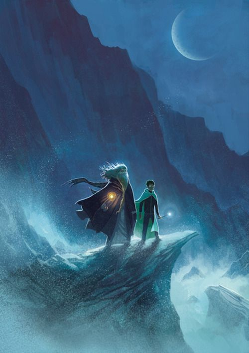

Post #1
-Não enquanto estiverem apenas boiando tranquilamente abaixo de nós. Nada temos a recear de um cadáver, Harry, como nada temos a recear da escuridão. Lord Voldemort, que naturalmente tem receio íntimo de ambos, discorda. Mas, de novo, ele revela sua própria falta de sabedoria. É o desconhecido que receamos quando olhamos para a morte e a escuridão, nada mais.